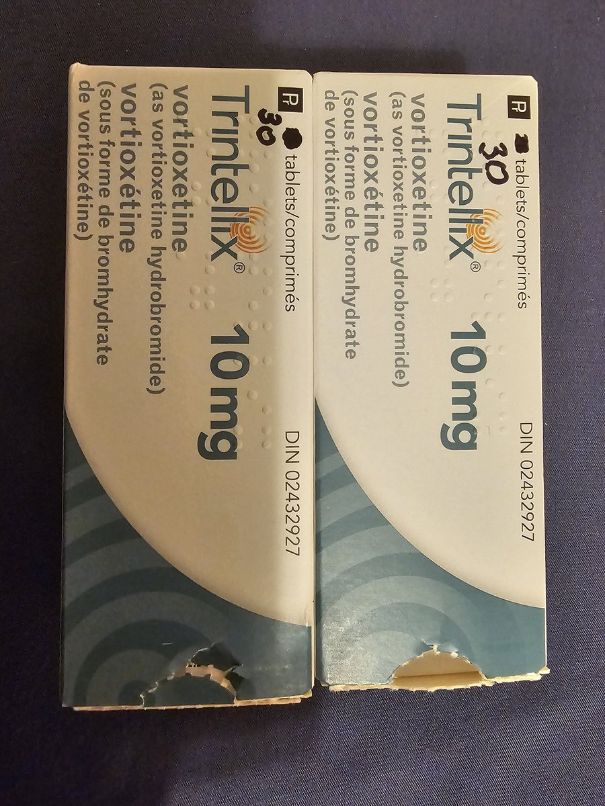
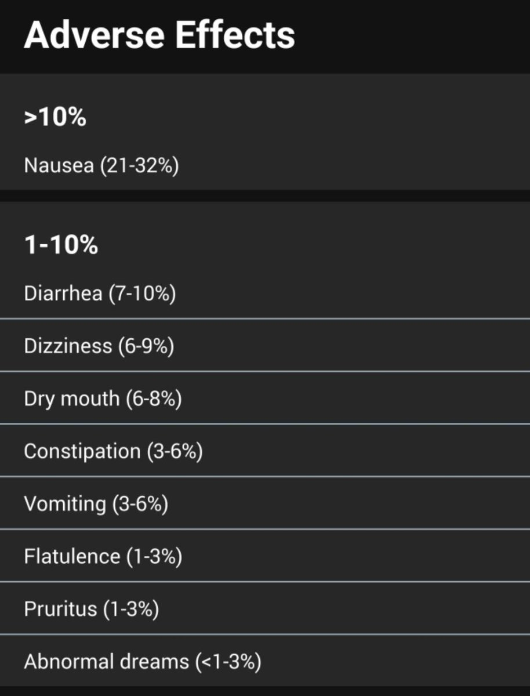

很感谢你，让我知道了伏硫西汀这款药物，如今我也要吃上它了。伏硫西汀唯一的缺点是赌，赌自己的体质契合度，也就是会不会发生恶心（nausea），如果赌对了自己的体质跟它不会导致恶心，那就是非常干净的一款药，如果赌输了，那么就只能换药，对我来说就是艾司西酞普兰。不过强力程度如何，我还不知道。



Trintellix
The latest anti-depressant with minimum side effect
If interested, please send me a private message https://t.co/kgB0ACHGku
The latest anti-depressant with minimum side effect
If interested, please send me a private message https://t.co/kgB0ACHGku